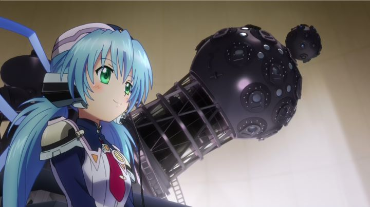

Disclaimer: This review covers the five-episode Original Net Animation (ONA) series "Planetarian - The Reverie of a Little Planet" and the feature film "Planetarian - Storyteller of the Stars."In 2016, one of the more interesting anime on my watch-list was "Planetarian." It was originally a short series of five episodes, released online, with each episode slightly shorter than a typical television episode. It also had a sequel theatrical film: both were released together in English by Funimation. Set in a post-apocalyptic future, the premise is not about what happened to lead to the demise of the human race, or of action or survival. Instead, it's about lonliness, a theme that reminded me a lot of "Fragile Dreams," an obscure Nintendo Wii video game I was fond for. In the case of "Planetarian," this theme is told through a human scanvenger and a robotic automaton, who waits alone in a planetarium in a shopping mall for her managers and customers to return.Anime fans have other reasons to look forward to this odd cross-platform adaptation. It's adapted from a visual novel by Key, a popular publisher known for romantic and tragic stories. Their works include "Kanon," "Air" and "Clannad," each getting anime adaptations and becoming cult-classics in the romance genre. More adaptations of their games have also been made, although most of them have failed to get the same following. Anyway, knowing any of these works will give you an idea of what to expect with "Planetarian," and if you like melancholy, tragic romance, you'll appreciate what the series tries to do. In the anime ONA, the human scavenger is a "Junker," someone who looks for scraps of garbage to sell or to sustain himself, particularly food or water (or alcohol). In Sarcophagus City, he is tailed by functional armed security robots, and escapes inside a mall to lose them, only to be met by Yumemi, the robot. She welcomes him as the Planetarium's 2,500,000's customer, and proceeds to begin the show, despite the Junker's reluctance. Of course, after so many years of inactivity, the projector has broken down... but despite having the opportunity to leave, the Junker can't help but remain to help her proceed with the presentation. Despite being annoyed and rough by the eager and ignorant A.I., her earnestness gets to him. After years of struggling to survive, he finds friendship, respect, or possibly more, in this artificial person, and eventually, in her vibrant and hopeful narration of the night-time sky. A sky that shows the stars, a thing that had long been hidden from the world due to perpetual clouds and rain. Of course, things go awry. One thing seems to break after another, requiring the Junker to stop to fix it as his rations slowly run out, until finally, the electricity in the city cuts out. As the Junker prepares to leave, he tries to encourage Yumemi to come along, knowing without electricity to recharge or more humans to help, her time will run out if she stays behind. The show sets up several foreshadowing lines, like the fact that Yumemi is "an older model without the ability to cry," or talk of "robot heaven," and a few cute jokes to make her possible death even more depressing. Yes, the ONA has a sad ending, and the show is as manipulative as can be, not subtle in what it's leading to. ... but darn it, it worked. Despite the weird pacing of the final episode (full of action, and Yumemi acting in a way that made me echo the Junker's comment of "why did you do something so stupid?!"), I cried a little. And as the sad ending was stretched out a few minutes too long, I cried a little more, before rolling my eyes and looking at my watch. It even goes so far to have Yumemi project a hologram of her memories to the Junker: her life flashing before her eyes! It might be a little full of itself, but it does exactly what it sets out to do emotionally, and in a relatively concise format rather than a full twelve-episode season. Aside from the slightly contrived way it gets to the ending, the biggest real issue I had was with Yumemi being a robot. In her dialogue and delivery (either in English or Japanese), there are some hints to her not being human, but most of the time, she seems far TOO human to make her character believable. It's a common issue, but being so important to the story, it can be distracting to feel a connection to this robot when it doesn't seem like a robot. A strange thing to say, as making such a human connection feels only possible if the robot comes across as human, but I hope what I said makes sense.  The visuals of the ONA are reasonable, with slight improvements to color and character design over the visual novel (everything is made of many shades of "blue"). The faces have old-fashioned designs, Yumemi is particular, which is cute but feels dated in 2016. Backgrounds and machine designs seem the most polished element. Animation is a bit limited, but occasionally makes good use of camera movement and 3D modeling. The music is soft and heartfelt, and the English dub is solid, thankfully, given that this is an intimate story with only two real characters. I wasn't certain about what the feature film even was going in: was I supposed to watch it before or after the ONA series? It turns out the film (at 120 minutes compared to the ONA's 90) is both a sequel and compilation. I was surprised and pleased to see how it starts, taking place decades after the ONA's ending, showing the Junker as an old man, having well-spent his life as a fabled traveler named the "Storyteller of the Stars," and arriving at one last community in an abandoned church covered in snow. With only a few dozen citizens, only a few children and no adult men left, they know their population will disappear soon enough. When the Junker arrives, they welcome him, and he shares his gift of showing the stars (which the children at this point have never heard of before), as well as telling his story: a mostly unedited cut of the original series is contained inside the film, with a handful of small additions that are easy to miss (and missing the opportunity to expand more on unanswered questions or references). Even if the original story was exceptional, it's hard to have to rewatch the whole thing within a sequel film. It would have been nice to offer the new parts of the story as a separate sixth (and maybe seventh) episode to directly follow the originals. But as it is, does it make sense to even bother watching the ONA, or should you just experience the whole thing in the movie? I think the emotional ties would feel stronger if you start with the ONA, even if it requires you to fast-forward through more than half of the film; the way it's presented, experiencing the story within the film doesn't hold the same weight with how it relates to the new present day.The new setting of the film is an interesting one, in particular, the potential for the story to continue with the community's children. It turns the story from being like "Fragile Dreams" into a more classical science-fiction story, reminding me of the novel "The Giver." More than anything, I'm just impressed that they had the confidence to continue the story at all, when so many other studios would decide to stop. It's not unusual for Key works ("Clannad - After Story" is the most famous example of it), but appreciated nonetheless. Curiously, the production values haven't improved at all, and adding extra characters almost makes the film less focused, a detriment compared to the ONA. The ending wasn't what I expected, not giving the happy ending I wanted, nor a horrifically sad one... but dang it, I cried again."Planetarian" is a little bit of a sleeper story. Quite literally: as invested as I tried to be, I nodded off a little while watching, having to rewind a bit to rehear important lines I missed. While not as educational, the series reminded me of the experience of a real planetarium, the romance and wonder of it. It doesn't do anything exceptionally well, but I appreciate the thematic tone (one rarely seen in the action-packed world of anime) well enough to be happy it exists. With any luck, those themes and memories it tried to tell will carry forward and be retold in the next generation, hopefully improving the next time around.
- "Ani" More reviews can be found at : https://2danicritic.github.io/ Previous review: review_Pinocchio Next review: review_Planetes